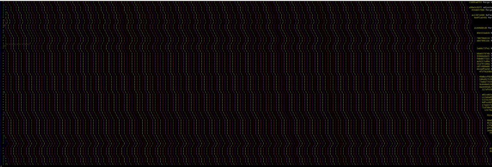

No tits in git
on Dragoș Străinu's blogI don't know about you but my first git experience was with Github. The power of git is allowing development as a team, where every team member can make a branch and then create a Pull Request. My first PR was an experience. After submitting it, my teammate merged it and the git history looked like this:
* 8d662a2 Merge pull request #1 from strdr4605/new-colors
|\
| * cbf20e1 Setting better colors for rectangles
|/
* 40446a6 fixed readme typo
* b894618 add readme to lab2, modified cases methods in bussiness logic
When doing a default merge, git will create a merge commit with info about the branch that was merged history will show the path to commits. I call it a "tit" and I now will explain why you should not have tits in git!
Let's say my teammate was doing something on local master, his master branch was at 40446a6 then he committed some changes.
* 5963243 (HEAD -> master) add circles
| * 8d662a2 (origin/master, origin/HEAD) Merge pull request #1 from strdr4605/new-colors
| |\
|/ /
| * cbf20e1 Setting better colors for rectangles
|/
* 40446a6 fixed readme typo
* b894618 add readme to lab2, modified cases methods in bussiness logic
Now when he tries to push to remote git will alert that he should first do a git pull.
git pull internally is doing 2 things, git fetch to get updates from origin/master and git merge.
And the git history looks like this:
* c3633b4 (HEAD -> master) Merge branch 'master' of https://github.com/sspatari/OR_Labs
|\
| * 8d662a2 (origin/master, origin/HEAD) Merge pull request #1 from strdr4605/new-colors
| |\
| | * cbf20e1 Setting better colors for rectangles
| |/
* | c27aac2 add circles
|/
* 40446a6 fixed readme typo
* b894618 add readme to lab2, modified cases methods in bussiness logic
You see! A new indentation and a bigger tit. Now it's harder to understand the git history. And it can get worse, and in one moment when you need to debug something and use git history, you see over 9000 tits, small, big, enormous, gigantic.
I asked a friend of mine whats this:
And he told me that it's a photo of my grandma's carpet 😂.
But actually, it's a git history from a development team of my friend. Here is a zoom out:

You may say "I don't look at git history, I don't even use the command line, I only click the magic button on my IDE when I want to push my changes and everything is ok". Sure, it's ok until the moment when things become complicated. Maybe you need to get some changes from another branch, or maybe you need only one commit from your teammate's branch. You may have some conflicts when merging/rebasing a wrong branch using your magic IDE. Maybe you need to find a bug that was introduced some time ago and the only way to understand where approximately it was is by looking at git history. You may spend hours, days trying to navigate in a dimension full of tits.
The main causes of git tits are:
- No desire to learn git a bit
- Using magic IDE buttons
- Using "Merge pull request" option button in Github PRs
The solution
Use git rebase always!
Here is a version of the git history above if it was done using git rebase:
* 461db4e add circles
* ad0041c Setting better colors for rectangles
* 40446a6 fixed readme typo
* b894618 add readme to lab2, modified cases methods in bussiness logic
🎉 Now it's cleaner what is happening in the project. If rebasing on every feature or bug fix, the git history will look like a straight line with some branches on top. It will be easier to understand the status of the project and what git operations should be done. Easier to get some changes from other branches, or to find a bug that from past commits.
You may think, rebasing is lying about the project history and it's true. When rebasing you reapply the commits and now they have different hashes and committing dates/authors. You will lose info about the branch name that was merged, or when these changes were initially committed. If this is more important for you then yeah git tits is the way to go. But I think about git history, not like some timeline of the project development where changes happened and I need all details, but more like a version history of the project where every commit is a new version. Then I don't care about dates, hashes, authors. I only know that this version of the project (commit 2) comes after another version (commit 1).
So, how to eliminate git tits:
- Use
git rebaseinstead ofgit merge(or usegit merge --ff-only) - Use
git pull -r(will dogit fetchandgit rebase) when getting updates from remote - Use Rebase and merge option button in Github when merging PRs
The only case where we can not escape from git tit is doing a rebase with a lot of commits (20+) and you have to resolve conflicts at every other commit.
This can be a pain, especially when in the process of rebasing you did a mistake and the only way to revert it is to rebase again.
In this case git merge will let you solve all the conflicts in one take.
I hope you understood my idea and from now on instead of confusing git tits and spaghetti, your project git history will look more like a beautiful palm tree.
Let me know if there are other use cases when git tits are inevitable
You may also check how I use git